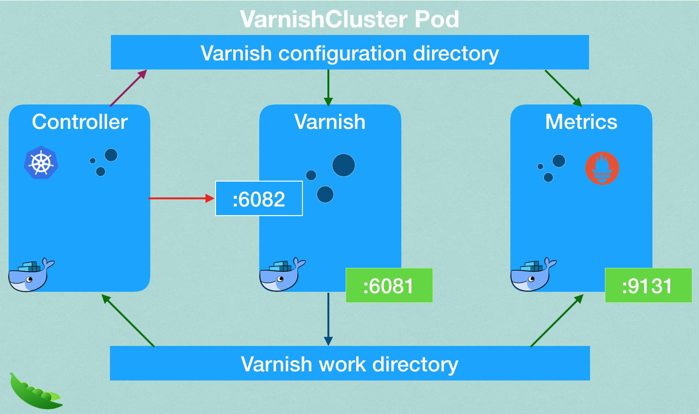

Architecture
Varnish operator consists of multiple components working together to operate a Varnish clusters.
CustomResourceDefinition
CustomResourceDefinition extends Kubernetes with a VarnishCluster resource that describes your Varnish instance. Define a resource of Kind VarnishCluster and specify all the required fields for the Varnish cluster (backend, service port, VCL configuration, cpu/memory requests and limits, etc.).
VarnishCluster spec fields are described in the VarnishCluster configuration section.
Varnish Operator
The Varnish Operator is an application deployed into your cluster that knows how to react to the VarnishCluster resource. Meaning, this application watches for new or changed VarnishClusters and handles the actual underlying infrastructure. It must be running at all times in the cluster and it usually lives in its own namespace away from your application. It is built using the Kubebuilder SDK.
You can configure the Varnish Operator via its Helm chart.
Varnish Cluster's pod
The VarnishCluster resource contains a Kubernetes pod definition as a part. There are three containers available inside the pod. Each container is responsible for a specific task. The main Varnish container runs varnish process itself. Two sidecars containers are responsible for metrics export in Prometheus format and internal Kubernetes communications to control the Varnish instance.
The containers share specific volumes for the varnish configuration and work directory. Only one container is configured to write to specific shared volume.

Varnish
The Varnish process itself. Currently only Varnish version 6.5.1 is supported. The operator doesn't support arbitrary Varnish images due to additional components needed for the operator to function. The container image is custom built with varnish and varnish modules preinstalled.
Varnish-Controller
Varnish-Controller is a process which watches the resources needed to build the VCL configuration (ConfigMap with VCL files, backend pods, Varnish pods) and prepares configurations updates rebuilds every time it notices a change. It notifies varnish to apply changes when they are ready.
Prometheus metrics exporter
The pod also includes a Prometheus metrics exporter process image for Varnish instances. The Service port it is listening on is configurable in the VarnishCluster spec.